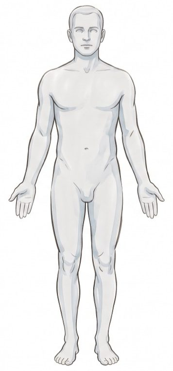
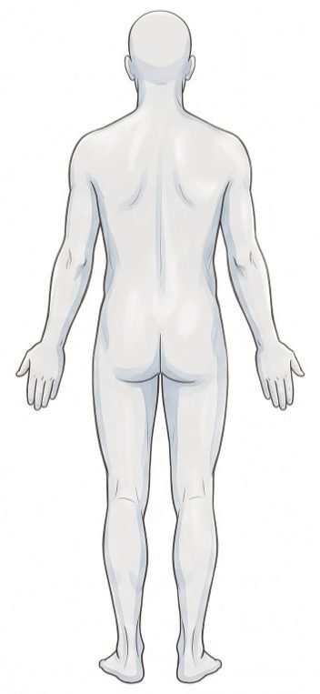
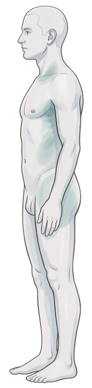
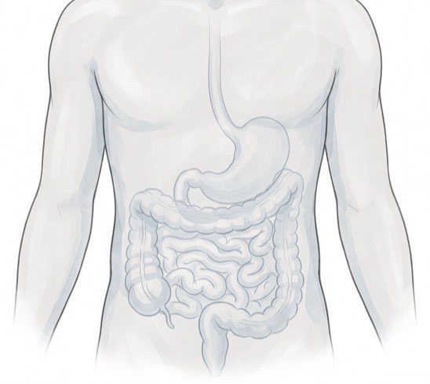
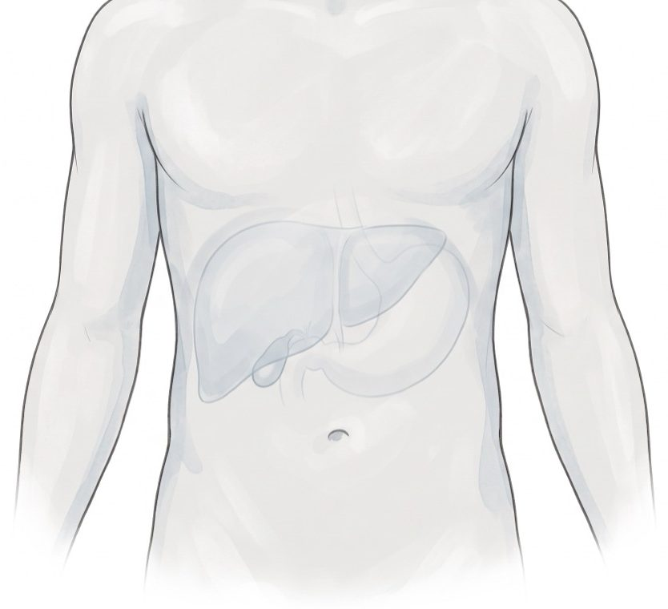
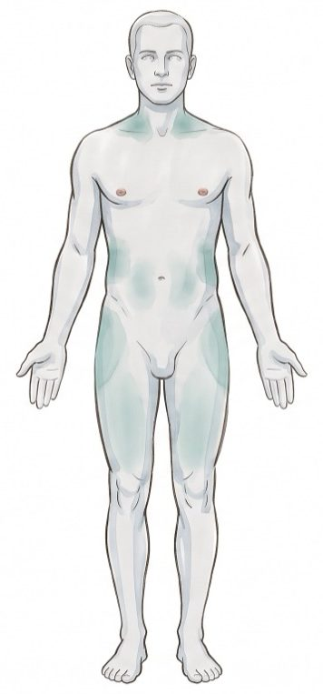

Dr. Miguel Ojeda Rios Instituto Centrobioenergetica
Documento de referencia Edición agosto de 2026
regulación bioeléctricaCatálogo de puntos y nodos
Índice
Doce técnicas, por eje
Nodo de lesión
03Técnica de Regulación Bioeléctrica del nodo de lesión
Eje transversal
05Los diez puntos de la red del eje craneosacro
07Mapa de nodos del eje transversal
Eje digestivo
15Técnica de Regulación Bioeléctrica del eje digestivo
Eje metabólico-energético
17Mapa de rastreo hepático
21Mapa de rastreo pancreático endocrino
23El tejido adiposo
25Los nodos de inflexibilidad metabólica
Eje inflamatorio
27Rastreo de órgano o tejido inflamado
28La placa arterial
Instituto Centrobioenergetica
02
regulación bioeléctricaCatálogo de puntos y nodos
Nodo de lesión
Técnica de Regulación Bioeléctrica del nodo de lesión
Apertura del rastreo — acidosis temporal y acidosis latente
Zona renal
Región lumbar posterior, bajo las últimas costillas, a cada lado de la columna. Polo positivo con la cara positiva a la piel, del lado del acortamiento (homolateral en ≈80 %); el negativo adyacente cierra el dipolo local
Área parietal contralateral
Piel del área parietal de la cabeza, del lado contrario a la zona renal utilizada. Polo negativo; el positivo queda en la zona renal — dipolo distante que cruza el cuerpo
Dipolos por zona
Zona más sintomática
El hallazgo de mayor intensidad del mapa corporal —dolor, tensión, contractura, edema o ardor— o la zona lesionada. Polo negativo con la cara negativa a la piel; el positivo a un lado cierra el dipolo local
Nodos distantes — orden fijo de prueba
1 · Zona renal
Región lumbar posterior, bajo las últimas costillas, a cada lado de la columna. Primero la derecha, luego la izquierda
2 · Suprarrenal
Justo por encima de la zona renal, sobre su polo superior. Primero la derecha, luego la izquierda
3 · Hígado
Hipocondrio derecho; sobre la piel, rastreando toda la zona hepática
4 · Bulbo raquídeo
Nuca, en el hueco por debajo del occipucio
5 · Cuerpo entero
Si ninguno restablece la isometría, rastrear el resto del cuerpo
Instituto Centrobioenergetica
03
regulación bioeléctricaCatálogo de puntos y nodos
Nodo de lesión — hoja de trabajo
Técnica de Regulación Bioeléctrica del nodo de lesión

Vista anterior

Vista posterior
Instituto Centrobioenergetica
04
regulación bioeléctricaCatálogo de puntos y nodos
Eje transversal
Los diez puntos de la red del eje craneosacro
De arriba hacia abajo, como en la figura del manual del Módulo 1
1 · Pineal
Línea media de la cabeza, en el vértice
2 · Base del cráneo
Nuca, en el hueco por debajo del occipucio
3 · Supraclavicular
Fosa supraclavicular, sobre la clavícula
4 · Escápula
Sobre el cuerpo de la escápula, en la fosa infraespinosa
5 · Tricipital
Cara posterior del brazo, tercio medio, sobre el tríceps
6 · Riñón
Región lumbar posterior, bajo las últimas costillas, a cada lado de la columna
7 · Suprarrotuliano
Cara anterior del muslo, justo por encima de la rótula
8 · Aquiles superior
Tercio superior del tendón de Aquiles, en la unión con el gemelo
9 · Empeine
Dorso del pie
10 · Cervical–sacro
Un polo en la columna cervical, en la nuca; el otro sobre el sacro — el dipolo ancla los dos extremos del eje
Cómo se rastrea y se aplica esta red
Cada punto se rastrea y se aplica como dipolo bilateral: un polo en el lado derecho y el otro en el izquierdo. El riñón aparece aquí en un papel distinto del que tiene en el orden fijo del nodo de lesión — es el mismo lugar con dos funciones.
Instituto Centrobioenergetica
05
regulación bioeléctricaCatálogo de puntos y nodos
Eje transversal — hoja de trabajo
Los diez puntos de la red del eje craneosacro
Vista anteriorVista posterior
Instituto Centrobioenergetica
06
regulación bioeléctricaCatálogo de puntos y nodos
Eje transversal
Mapa de nodos del eje transversal — cuarenta y un puntos
Cabeza y cuello
Vértice
Punto más alto de la bóveda craneal
Occipital
Sobre la zona occipital
Glabela
Forma dipolo sagital con la depresión suboccipital
Depresión suboccipital
Debajo del occipucio — complementario sagital de la glabela
Fosa suboccipital
Detrás del mastoides, zona del punto de acupuntura VB20 — derecha e izquierda
Fosa retromandibular
Detrás de la rama de la mandíbula
Área temporal
Sobre el masetero — derecha e izquierda
Área paravertebral cervical
Donde están las raíces cervicales
Esternocleidomastoideo
Piel sobre el músculo
Fosa yugular
Hueco supraesternal
Fosa supraclavicular
Sobre la clavícula, en la fosa
Tórax anterior
Área xifo-esternal
Unión del cuerpo del esternón con el apéndice xifoides
Fosa de Mohrenheim
Triángulo deltopectoral
Área precordial
Sobre el corazón
Instituto Centrobioenergetica
07
regulación bioeléctricaCatálogo de puntos y nodos
Eje transversal — hoja de trabajo
Mapa de nodos del eje transversal — cuarenta y un puntos

Vista lateralVista anterior
Instituto Centrobioenergetica
08
regulación bioeléctricaCatálogo de puntos y nodos
Eje transversal — continuación
Mapa de nodos del eje transversal
Tronco posterior
Vértebras, una a una
Cada nivel por separado — cervicales, dorsales, lumbares, sacras
Región paravertebral
Derecha e izquierda de cada vértebra, nivel por nivel
Borde superior del trapecio
Sobre el músculo, borde superior
Borde vertebral de la escápula
Sobre el borde medial
Abdomen
Zona epigástrica
Tercio superior del abdomen
Zona mesogástrica
Tercio medio del abdomen
Zona hipogástrica
Tercio inferior del abdomen
Ombligo
Sobre el ombligo
Fosa ilíaca
Derecha e izquierda
Región subcostal
En los flancos, en la parte más extrema
Instituto Centrobioenergetica
09
regulación bioeléctricaCatálogo de puntos y nodos
Eje transversal — continuación — hoja de trabajo
Mapa de nodos del eje transversal
Vista anteriorVista posterior
Instituto Centrobioenergetica
10
regulación bioeléctricaCatálogo de puntos y nodos
Eje transversal — continuación
Mapa de nodos del eje transversal
Pelvis y cadera
Espina ilíaca póstero-superior
Derecha e izquierda
Espina ilíaca ántero-superior
Derecha e izquierda
Región inguinal
Sobre el pliegue inguinal
Fosa trocantérea
En los glúteos
Periné
Derecha e izquierda
Miembro superior
Región supraolecraniana
Sobre el olécranon, cara posterior del codo
Fosa antecubital
Pliegue de flexión del codo
Antebrazo, tercio distal
Región anterior
Área de las muñecas
Sobre la muñeca
Dorso de la mano
Cara dorsal
Instituto Centrobioenergetica
11
regulación bioeléctricaCatálogo de puntos y nodos
Eje transversal — continuación — hoja de trabajo
Mapa de nodos del eje transversal
Vista anteriorVista posterior
Instituto Centrobioenergetica
12
regulación bioeléctricaCatálogo de puntos y nodos
Eje transversal — continuación
Mapa de nodos del eje transversal
Miembro inferior
Tensor de la fascia lata
Cara lateral del muslo
Ojos de la rodilla
Recesos parapatelares
Hueco poplíteo
Cara posterior de la rodilla
Tendón de Aquiles
Sobre el tendón
Canal retromaleolar
Entre el tendón de Aquiles y el maléolo
Empeine
Dorso del pie
Planta del pie
Cara plantar
Cómo se forma el dipolo en esta red
Cada punto forma dipolo con su homólogo del lado contrario. La única excepción es el dipolo sagital glabela – depresión suboccipital.
Instituto Centrobioenergetica
13
regulación bioeléctricaCatálogo de puntos y nodos
Eje transversal — continuación — hoja de trabajo
Mapa de nodos del eje transversal
Vista anteriorVista posterior
Instituto Centrobioenergetica
14
regulación bioeléctricaCatálogo de puntos y nodos
Eje digestivo
Técnica de Regulación Bioeléctrica del eje digestivo
Once zonas de proyección — son áreas, no puntos
1 · Esófago y esfínter inferior
Línea media del tórax, del hueco supraesternal al apéndice xifoides
2 · Estómago
Epigastrio, y hacia el hipocondrio izquierdo
3 · Duodeno
Epigastrio derecho, entre la línea media y el hipocondrio derecho
4 · Yeyuno
Región periumbilical
5 · Íleon
Cuadrante inferior derecho, por dentro de la espina ilíaca
6 · Válvula ileocecal
Cuadrante inferior derecho, sobre el punto de unión
7 · Colon
Marco cólico: ascendente derecho, transverso, descendente izquierdo
8 · Recto y esfínteres
Región sacra y perineal
9 · Glándulas salivales
Región parotídea y submandibular
10 · Páncreas exocrino
Epigastrio profundo, con proyección hacia el flanco izquierdo
11 · Hígado y vía biliar
Toda la zona hepática sobre la piel
Nodo distante
El mismo orden fijo general — renal D→renal I→suprarrenal D→suprarrenal I→hígado→bulbo raquídeo→cuerpo entero
Instituto Centrobioenergetica
15
regulación bioeléctricaCatálogo de puntos y nodos
Eje digestivo — hoja de trabajo
Técnica de Regulación Bioeléctrica del eje digestivo

El tubo digestivo bajo la piel. Sobre esta lámina se ubican las once zonas de proyección.
Instituto Centrobioenergetica
16
regulación bioeléctricaCatálogo de puntos y nodos
Eje metabólico-energético
Mapa de rastreo hepático
Cinco zonas del recorrido
1 · Hiliar
Epigastrio derecho, bajo el reborde costal, hacia la profundidad
2 · Lecho vesicular
Punto cístico: cruce del reborde costal derecho con la línea medioclavicular
3 · Ligamento falciforme
Línea media, del apéndice xifoides hacia el ombligo
4 · Izquierda
Epigastrio, a la izquierda de la línea media, bajo el xifoides
5 · Derecha, la masa
Hipocondrio derecho, del sexto espacio intercostal al reborde costal, línea medioclavicular
Nodo distante
Orden fijo general, sin el hígado — renal D→renal I→suprarrenal D→suprarrenal I→bulbo raquídeo→cuerpo entero
Instituto Centrobioenergetica
17
regulación bioeléctricaCatálogo de puntos y nodos
Eje metabólico-energético — hoja de trabajo
Mapa de rastreo hepático

El hígado bajo la piel, con la vesícula en el borde inferior del lóbulo derecho. Sirve a las cinco zonas y a los ocho segmentos.
Instituto Centrobioenergetica
18
regulación bioeléctricaCatálogo de puntos y nodos
Eje metabólico-energético — continuación
Mapa de rastreo hepático — los ocho segmentos de Couinaud
División quirúrgica, referencia anatómica
I · Caudado
Cara posterior, entre la vena cava inferior y el hilio hepático — no accesible desde la superficie
II · Lateral superior izquierdo
Hipocondrio izquierdo, por encima del plano transverso de la vena porta
III · Lateral inferior izquierdo
Hipocondrio izquierdo, por debajo del plano transverso de la vena porta
IV · Cuadrado
Epigastrio, entre la vesícula biliar y el ligamento falciforme
V · Anterior inferior derecho
Hipocondrio derecho, por debajo del plano portal, adyacente al lecho vesicular
VI · Posterior inferior derecho
Hipocondrio derecho, por debajo del plano portal, hacia el flanco
VII · Posterior superior derecho
Hipocondrio derecho, por encima del plano portal, hacia la línea axilar
VIII · Anterior superior derecho
Hipocondrio derecho, por encima del plano portal, línea medioclavicular
Instituto Centrobioenergetica
19
regulación bioeléctricaCatálogo de puntos y nodos
Eje metabólico-energético — continuación — hoja de trabajo
Mapa de rastreo hepático — los ocho segmentos de Couinaud
El hígado bajo la piel. Sobre esta lámina se marcan los ocho segmentos.
Instituto Centrobioenergetica
20
regulación bioeléctricaCatálogo de puntos y nodos
Eje metabólico-energético
Mapa de rastreo pancreático endocrino
Cuatro zonas
1 · Proceso unciforme
Epigastrio derecho, profundo, junto al duodeno, bajo el reborde costal
El páncreas bajo la piel, con el duodeno abrazando la cabeza.
Instituto Centrobioenergetica
22
regulación bioeléctricaCatálogo de puntos y nodos
Eje metabólico-energético
El tejido adiposo
Siete zonas, cinco rastreables
1 · Glúteo-femoral
Cara lateral de cadera y muslo
2 · Cervical-supraclavicular
Base del cuello, sobre la clavícula
3 · Perirrenal y retroperitoneal
Flanco, bajo las últimas costillas, en profundidad
4 · Intramuscular
Sobre cualquier vientre muscular grande — muslo con prioridad
5 · Abdominal / visceral
Periumbilical, ambos lados, y en profundidad hacia el mesenterio
Epicárdica
No accesible desde la piel — se declara y no se rastrea
Médula ósea
No accesible desde la piel — se declara y no se rastrea
Instituto Centrobioenergetica
23
regulación bioeléctricaCatálogo de puntos y nodos
Eje metabólico-energético — hoja de trabajo
El tejido adiposo

Las cinco zonas rastreables, insinuadas sobre la superficie.
Instituto Centrobioenergetica
24
regulación bioeléctricaCatálogo de puntos y nodos
Eje metabólico-energético
Los nodos de inflexibilidad metabólica
Nueve puntos, de arriba hacia abajo
1a · Mediastino superior
Mango del esternón, sobre la línea media
1b · Mediastino inferior
Unión del cuerpo del esternón con el apéndice xifoides, misma línea media
2 · Pectoral
Tercio medio del pectoral mayor, cuarto espacio intercostal, línea medioclavicular
3 · Línea axilar media
Sexto a séptimo espacio intercostal, línea axilar media, bajo el hueco de la axila
4 · Suprarrenales
Ángulo costovertebral, altura de la duodécima costilla, a cada lado de la columna
5 · Fosa antecubital
Pliegue de flexión del codo, cara anterior, medial al tendón del bíceps
6 · Muñeca
Cara anterior, pliegue de flexión, entre palmar largo y flexor radial del carpo
7 · Cuádriceps
Tercio medio de la cara anterior del muslo, sobre el recto femoral
8 · Aquíleo
Tercio medio del tendón de Aquiles, entre el maléolo y el calcáneo
Instituto Centrobioenergetica
25
regulación bioeléctricaCatálogo de puntos y nodos
Eje metabólico-energético — hoja de trabajo
Los nodos de inflexibilidad metabólica
Vista anteriorVista posterior
Instituto Centrobioenergetica
26
regulación bioeléctricaCatálogo de puntos y nodos
Eje inflamatorio
Rastreo de órgano o tejido inflamado
Sin zonas fijas — el orden en que se busca cada nodo
Polo negativo sobre la zona del órgano inflamado→nodo local, generalmente adyacente, al lado→si no aparece ahí y el órgano es bilateral, se busca por simetría contralateral→si no cierra, nodo distante: riñón, suprarrenal, hígado, bulbo raquídeo
La simetría contralateral es el segundo paso, no el primero
Se busca primero el nodo local adyacente, con el mismo criterio que hígado y páncreas. Solo si ahí no aparece y el órgano tiene equivalente en el lado contrario —la tiroides es el caso ancla— se busca la simetría contralateral antes de subir al nodo distante.
Instituto Centrobioenergetica
27
regulación bioeléctricaCatálogo de puntos y nodos
Eje inflamatorio
La placa arterial
Tres zonas
1 · Bifurcación carotídea
Lateral del cuello, altura del cartílago tiroides, entre esternocleidomastoideo y tráquea
2 · Femoral, canal de los aductores
Cara interna del muslo, tercio medio, entre sartorio y aductor mayor
3 · Aorta abdominal infrarrenal
Línea media, entre el ombligo y el pubis, en profundidad
Sobre la placa arterial
Cualquier marca en este recorrido se deriva al médico con estudio de imagen. El registro sirve para el diseño que contestaría la hipótesis, no para decidir una conducta clínica sobre la placa.